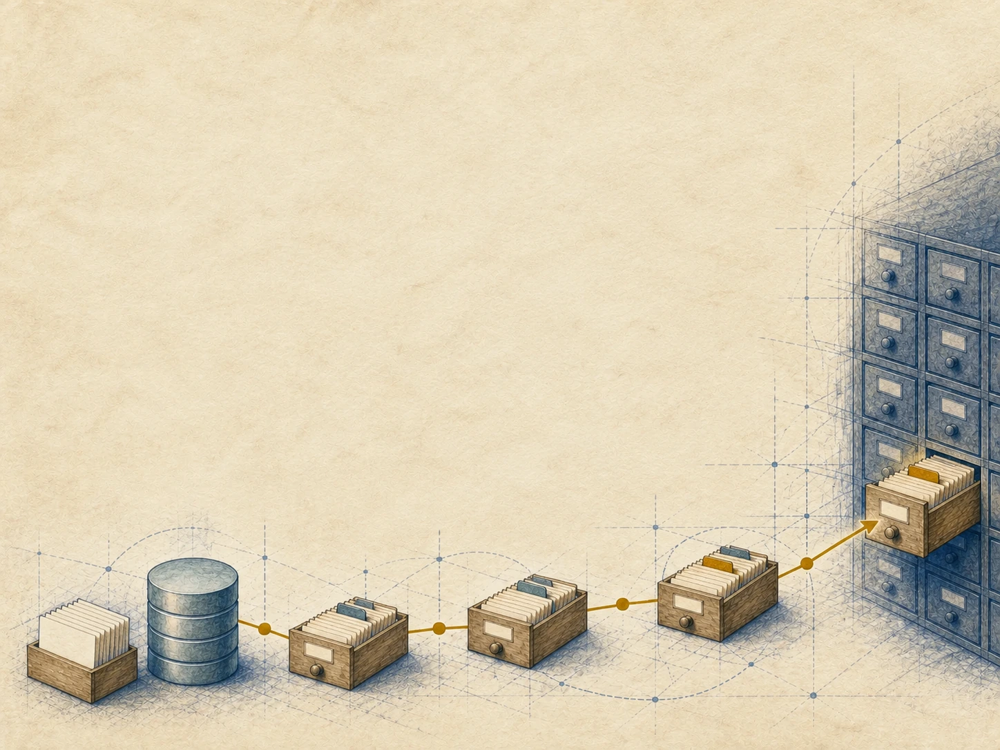
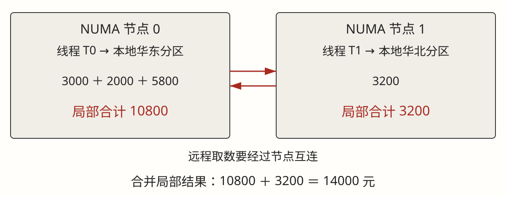

缓存完整的磁盘结构
数据页命中后免读盘，保留页映射、槽位和缓冲管理

订单驻留内存，持久日志支持断电恢复
 VER. 2608
Built with impress.js
VER. 2608
Built with impress.js
记录位置、访问开销与恢复材料共同影响内存数据库的设计
磁盘驻留数据库 DRDB 与内存数据库 IMDB 使用不同的记录访问路径
| 方案 | 索引定位之后的路径 | 读到的值 |
|---|---|---|
| DRDB，P9 未缓存 | 读 P9 到缓冲区→找槽 2→记录 | 1200 |
| DRDB，P9 已缓存 | 查缓冲映射→找槽 2→记录 | 1200 |
| IMDB，记录常驻 | 访问内存记录 R17 并检查版本 | 1200 |
P9、槽 2、R17 为示意编号；缓冲命中免读盘，记录访问须检查版本与并发
IMDB 以主存为主要工作存储，按内存访问特性设计结构
数据页命中后免读盘，保留页映射、槽位和缓冲管理
连续数组、紧凑索引、记录句柄可缩短访问路径
设计索引、版本、并发与恢复机制
同负载测 CPU 开销、访存与吞吐
IMDB 可保留页或块；数据全缓存与面向内存优化结构是两项不同工作
独立容量预算；以下均为同时存在的峰值需求，1 GiB = 2³⁰ 字节
| 内存用途 | 预算 |
|---|---|
| 基础数据＋索引 | 64＋24＝88 GiB |
| 旧版本与事务状态 | 16 GiB |
| 查询临时工作区 | 24 GiB |
| 操作系统及其他进程 | 16 GiB |
峰值 144 GiB，超过物理 128 GiB 达 16 GiB；常驻方案须另留运行余量
接 16.2 的订单；本例用已提交快照与持久日志恢复到 18000 元
| 持久材料 | 保存内容 | 恢复动作 |
|---|---|---|
| 完整检查点 100 | 四条订单行，共 14000 元 | 加载这四条记录 |
| 日志 101 及提交标记 | O103 两行，1200 与 2800 | 完整重放至 18000 |
| 日志 102，无提交标记 | O104 一行 500 元，尚未提交 | 跳过未提交订单 |
本例检查点仅含已提交状态；其他恢复算法可能需撤销 UNDO
本例以本地持久日志保证已确认事务能从整机断电恢复
本例可在新检查点生成前确认成功；数据页 I/O 减少，日志持久化成本保留
以下独立场景分别检查副本进度、断电范围和历史恢复材料
| 场景 | 故障后能否保住 101？ |
|---|---|
| 主库与副本都只在 DRAM，且同时断电 | 不能仅凭这些副本恢复 |
| 主库失效，异步副本只收到 100 | 接管可能缺少事务 101 |
| 可靠介质已有 100 检查点和 101 提交日志 | 可按本节规则恢复到 18000 |
| 误删已复制到全部副本 | 仍需可回溯的备份或日志策略 |
复制支持故障接管；提交条件、故障范围与持久材料共同决定恢复保证
CPU 高速缓存 Cache 按行取数；设每行 64 B，恰容纳 8 个 64 位整数
| 布局与读取 | 首次冷读触及的 Cache 行 | 带入字节 |
|---|---|---|
| 8 值连续，起点按 64 B 对齐 | 1 行 | 64 B |
| 8 值分散，每值位于不同 Cache 行 | 8 行 | 512 B |
只计这些值的数据行，忽略预取等访问；字节量增至 8 倍，耗时比例仍须实测
单指令多数据 SIMD 以向量为单位；本例金额为[3000，2000，3200，5800]
| 操作 | 本例过程 | 结果 |
|---|---|---|
| SIMD 选择示意 | 一组四值同时比较>2500 | 掩码[1,0,1,1] |
| 按掩码取值后求和 | 3000＋3200＋5800 | 12000 |
| 两线程分区求和 | T0 前半 5000，T1 后半 9000 | 合并 14000 |
SIMD 宽度随类型与硬件变化；线程各算局部值，再安全合并，避免无保护地更新共享总数
独立理想模型：任务 20% 只能串行，80% 可完美分给 8 核
| 部分 | 单核耗时 | 8 核理想耗时 |
|---|---|---|
| 串行部分 | 20 ms | 20 ms |
| 可并行部分 | 80 ms | 10 ms |
| 合计 | 100 ms | 30 ms |
理想加速 100/30≈3.33 倍；实际耗时包含调度、同步、访存和带宽争用
非均匀内存访问 NUMA 中，线程与数据的位置影响访存路径

使用 16.1 四条事实；远程访存经过节点互连，地区分区可能负载不均
独立串行访存估算：本地 100 ns、远程 180 ns，均为教学假设
| 1000 次访问的分布 | 计算 | 累计等待 |
|---|---|---|
| 500 次本地＋500 次远程 | 500×100＋500×180 | 140 μs |
| 900 次本地＋100 次远程 | 900×100＋100×180 | 108 μs |
本例访存串行、不重叠，未计 Cache 命中与并行；实际硬件延迟须测量
独立调度例按排队与执行时间之和比较两个节点
| 选择 | 排队 | 执行 | 合计 |
|---|---|---|---|
| 留在本地节点 | 8 ms | 1 ms | 9 ms |
| 转到空闲远程节点 | 0 ms | 2 ms | 2 ms |
本例远程完成更早；实际估算需包含迁移、共享状态和互连竞争
独立 CPU 与 GPU 存储的串行耗时模型；下列均为教学设定，单位 ms
| 成本 | 大批任务 | 小批任务 |
|---|---|---|
| CPU 直接完成 | 20 | 0.20 |
| GPU 输入与结果传输 | 8＋1＝9 | 0.50＋0.10＝0.60 |
| GPU 启动与计算 | 2＋3＝5 | 0.20＋0.05＝0.25 |
| GPU 路径合计 | 14 | 0.85 |
大批 14<20，小批 0.85>0.20；共享内存或数据复用会改变传输成本
规则并行计算可摊薄开销，收益须结合数据传输和任务规模评估
数值筛选、聚合、连接与排序
分支与随机访存可能抵消并行收益
数据是否已在设备上，显存是否足够，结果有多大
数据库负责提交、隔离与恢复，GPU 可加速算子
CPU 与 GPU 按算子分工；查询耗时与事务正确性须分别验证
非易失性存储 NVM 包括闪存；访问接口决定读写方式
| 这里比较的介质 | 典型访问接口 | 断电与数据库责任 |
|---|---|---|
| DRAM 主存 | 内存读写 | 易失；需其他恢复依据 |
| 持久内存的一种实现 | 内存读写 | 仍需持久化顺序和一致更新 |
| SSD / 磁盘设备 | 块 I/O | 仍需日志、备份和恢复协议 |
各类介质的延迟、带宽、容量、写入耐久与成本须逐项比较
独立账户转账例：A=100 元、B=50 元，计划转 10 元后变为 90/60
| 已持久保存的内容 | 断电后状态 | 是否正确 |
|---|---|---|
| 只有 A 减 10 已经保存 | A=90，B=50 | 总额 140，不完整 |
| 两项更新及提交条件均满足 | A=90，B=60 | 总额 150，完整结果 |
| 按恢复协议撤回未提交事务 | A=100，B=50 | 总额 150，原状态 |
CPU 写入可能暂留缓存；恢复协议须控制持久化顺序并保证事务原子性
记录布局决定访问路径，提交与恢复协议保护事务结果
数据、索引、版本、工作区占内存
检查点与提交日志恢复 18000 元
分别核算缓存、并行与访存成本
GPU 计传输；NVM 配恢复协议
第 17.2 节讨论列存、查询执行、索引、连接与事务恢复的实现